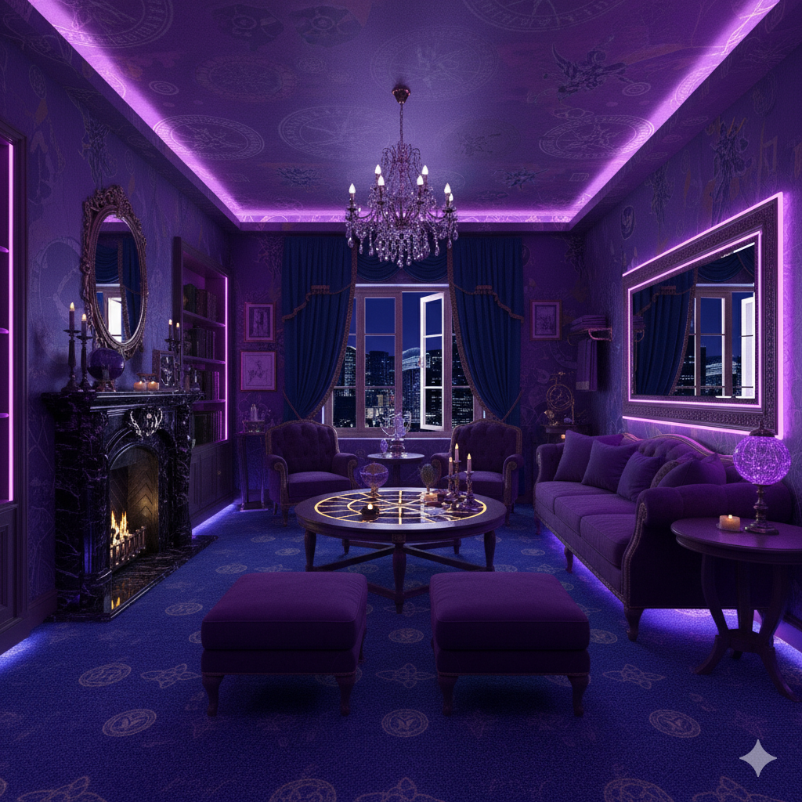
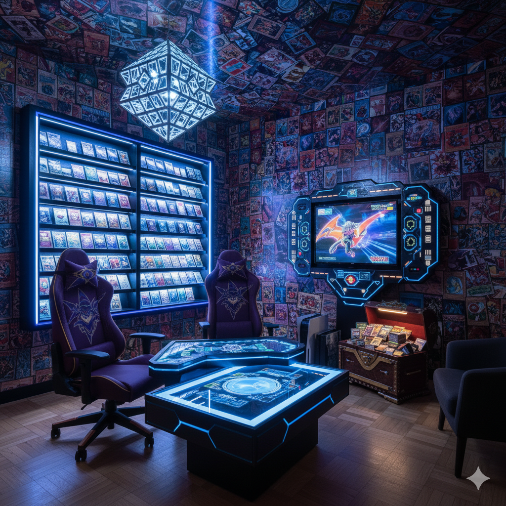
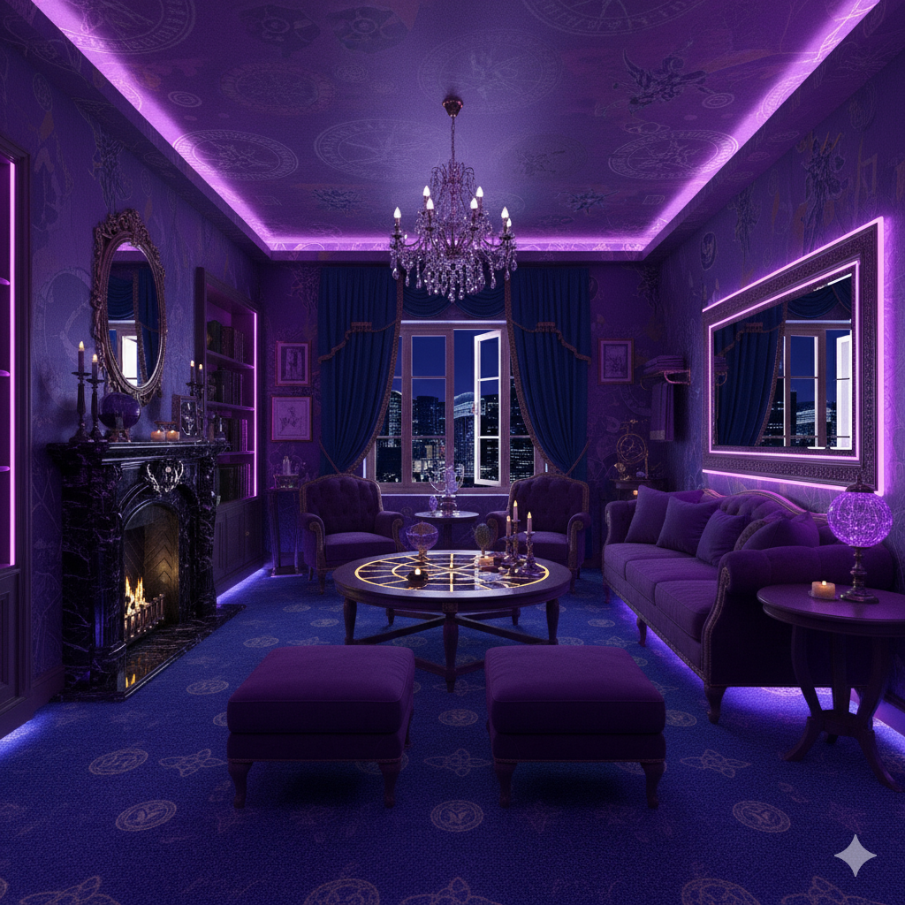
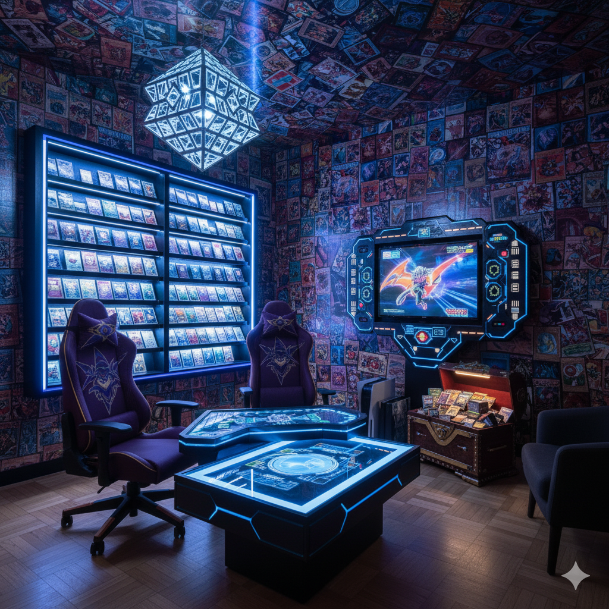
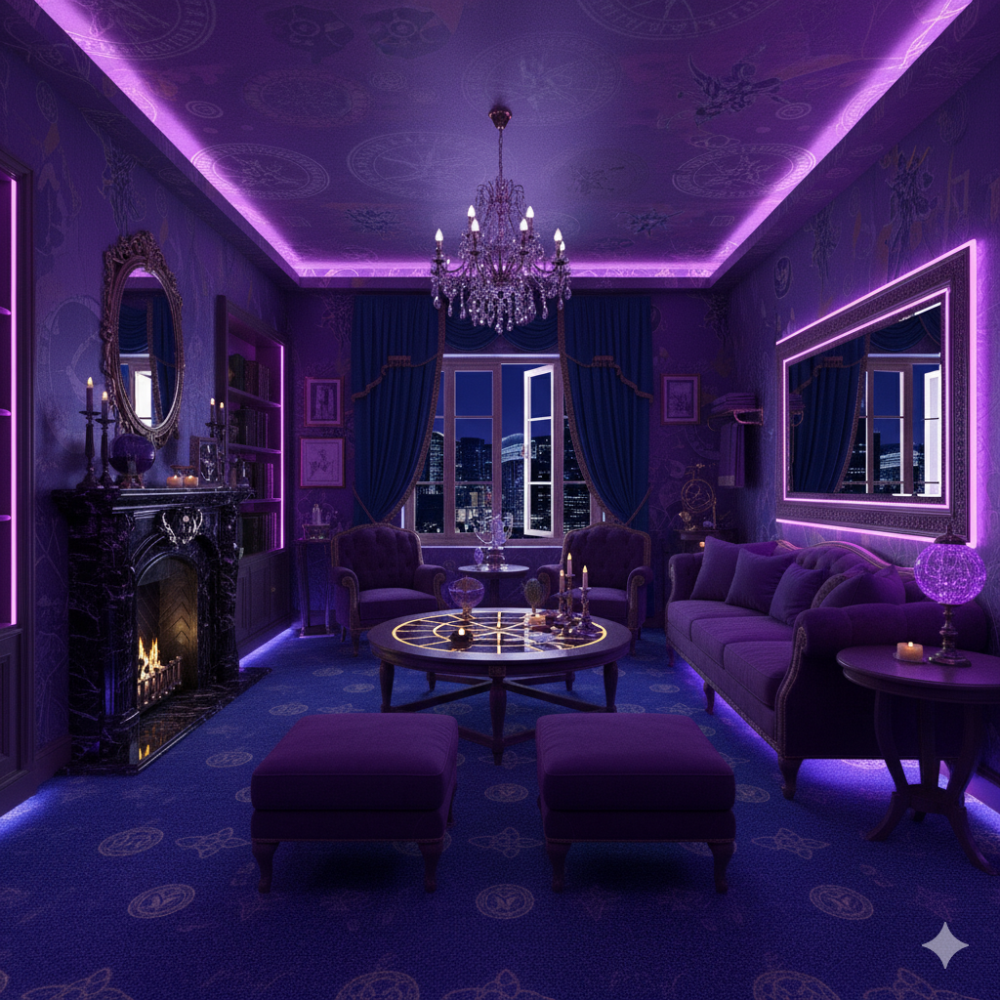
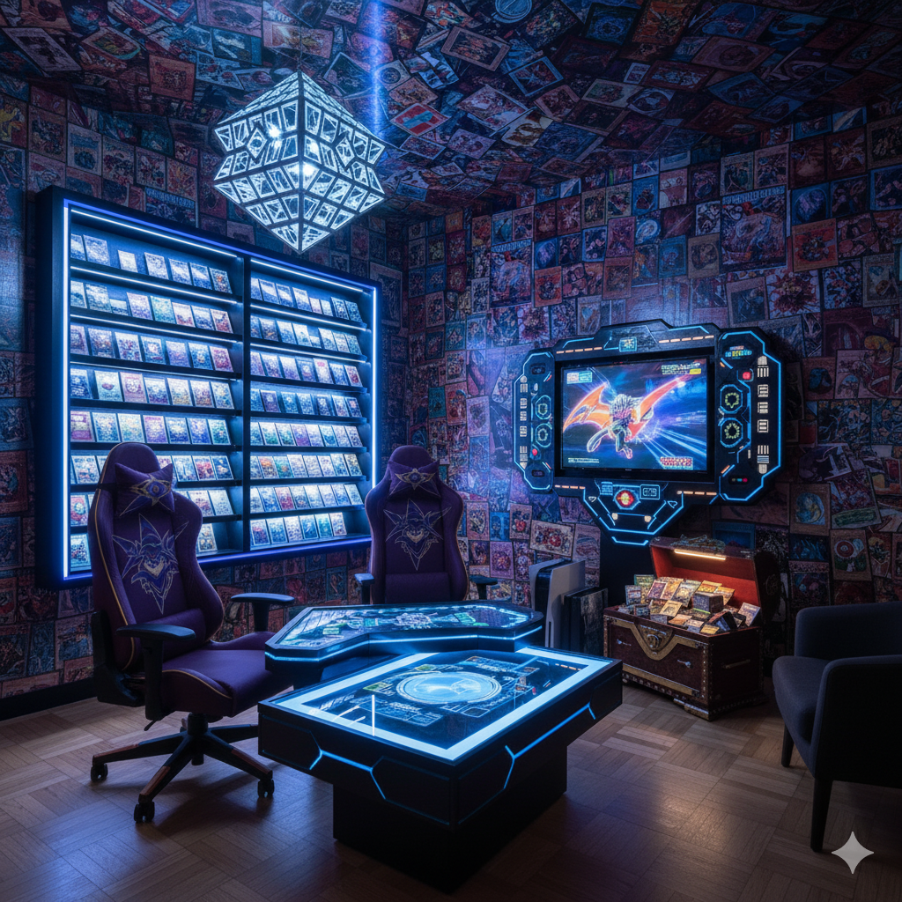

Modeled after the one and only, Yugi Muto. This room package comes with an affordable price of only $120 per night, with exclusive offers for a discount the longer the stay.


Pharaoh room features.
A comfortable king-size bed with clean linens, pillows, and extra blankets available upon request.
An en-suite bathroom equipped with a shower or bathtub, bath towels, hand towels, washcloths, and a bath mat.
Basic personal care items such as soap, shampoo, conditioner, and body lotion are standard. Many hotels also provide a hairdryer, shower cap, and a dental or shaving kit.
Free, high-speed internet access.
Special duelist packages and discounted group rates.
A flat-screen TV with access to local and cable channels with streaming capabilities for Netfilx, Hulu, and Apple tv.
A landline for internal and local calls.
Coffee and tea making facilities (kettle, coffee maker, tea bags, coffee packets.) are provided, as is complimentary bottled water. A mini-fridge will also be available.

 


